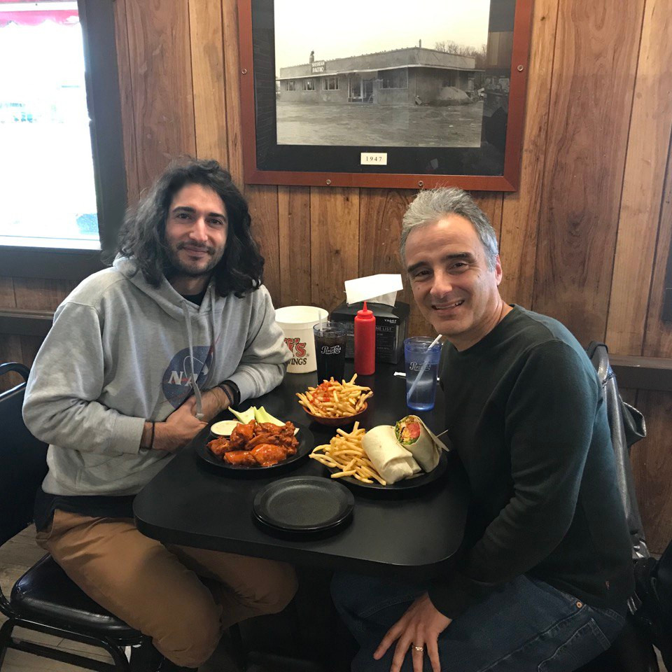
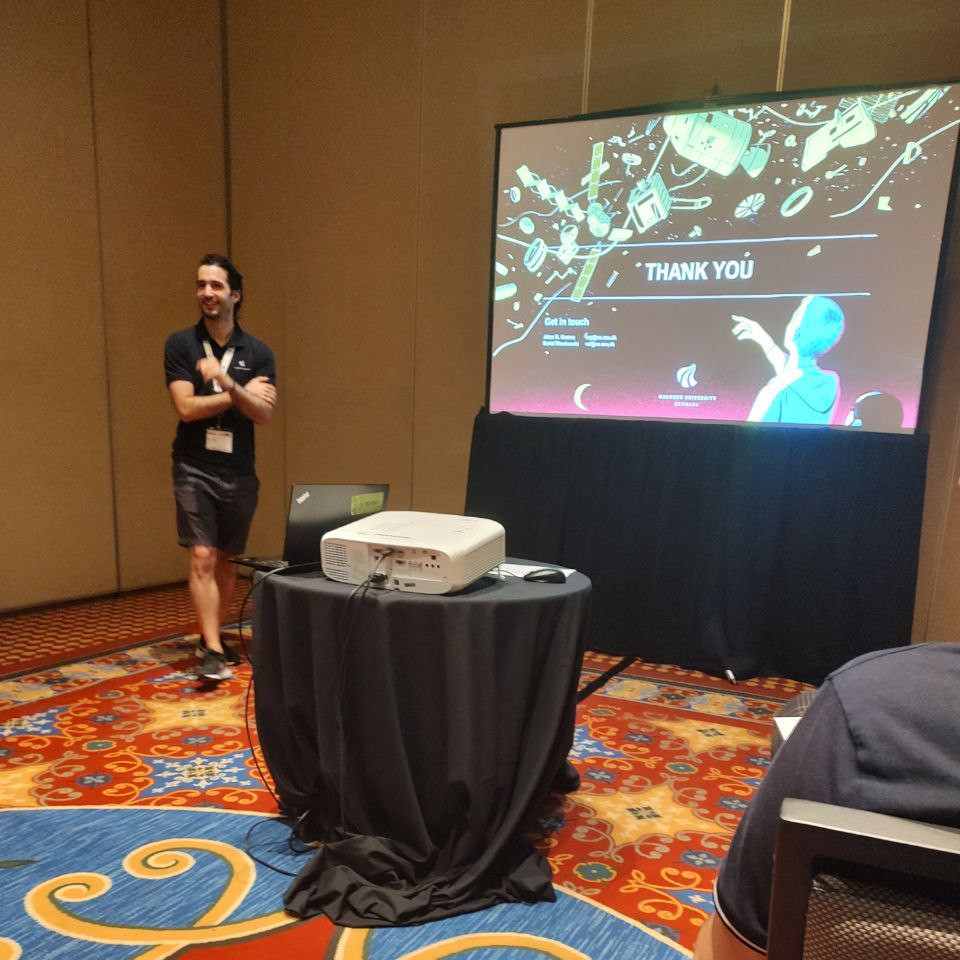

EXTERNAL LINK TO POST ⤤
Over the course of five months, I had the privilege of visiting Prof. John Crassidis, a distinguished expert in spacecraft attitude control and space situational awareness (SSA), as well as a former NASA employee, at his home university. During this time, he provided me with invaluable guidance and mentorship. Our collaboration yielded the development of a novel and effective methodology to estimate unknown spacecraft impulsive maneuvers, both in Earth-bounded orbits and cislunar (L2) space. This journey not only expanded my understanding on SSA but also allowed me to contribute to the advancement of this field alongside an admired mentor.
Presenting our accepted paper for publication Stochastic Safety in Space Conjunctions
